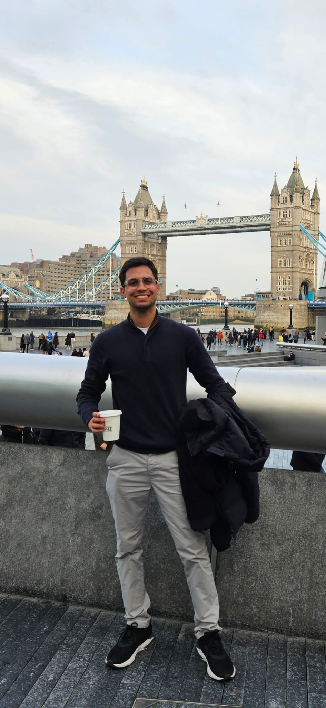

About
I have completed a Higher Technical Specialization Course (CET) in Information Systems Programming, Level 5.
During my internship at WIG - Work is Good, I gained valuable experience in software development. I learned to work with technologies such as .NET Core and Blazor, implemented unit tests, and conducted deployments on Azure. I collaborated effectively within a team using GitHub and had the opportunity to plan and develop three complete Proof of Concepts in full-stack Blazor projects.
I believe that a developer should not limit themselves to just writing code but should understand the entire process and actively seek solutions. I value innovation and creativity in my development work. My goal is to deliver high-value solutions to clients with an excellent user experience.
Creative, self-motivated, and inquisitive, these are my key traits that have enabled me to develop skills with JavaScript and C# technologies.
I went to Oxford to improve my English and experience different cultures.
I had the opportunity to immerse myself in various cultural environments and converse with people from diverse backgrounds.
I met individuals from Spain, England, Mexico, Colombia, France, Poland, the Netherlands, Brazil, Italy, Chile, Japan and Portugal. Each of these countries has a wonderful culture, offering me a new perspective on the world. I made friends with people of incredible nationalities.
This experience significantly enhanced my skills, especially my social skills. I became better at solving problems, speaking different languages, explaining technologies, and being a good listener.
Now, as I return home to Portugal, I bring with me a new version of myself and new dreams.
My objective has been achieved.
Project where I made a movie poster. With ReactJS and Axios I consumed a movies api. I made this project to work with the manipulation of a list and an external api.
Develop a chat with soket.io and node js. the study was to learn how to use this library. the site displays the name of the user who entered the room, the message sent and who sent it.
An app that shows you how the weather is, I introduced 2 external apis to show the flag and an img of the city. Modern UX UI. Technologies used: ReactJS APIs
The Bank Project is a proof of concept (POC) for a website that allows users to track real-time data of American fund stocks. With the ability to save information about stocks, the system also provides data filtering functionalities. I created it during my internship, and the technologies used were Blazor, C# .Net, and the AlphaVantage API.
Management system for small businesses. Complete project with frontend backend and database, a complete CRUD for users and products.It also has a section to find out how many products were sold and details of each profit. finally, a dashboard where it shows how many euros of revenue, profit the company has in general and individually with each product. Technologies used: ReactJS Node MongoDB.
Landing page to show services, prices and lead capture for a company. this landing page was focused more on CSS design and effects. technologies used: HTML CSS JS.
A feature for submitting general feedback about the website or reporting a specific bug. This was a project I worked on during my internship, where we had complete freedom to manage both the project itself and its design. Blazor C# .NET
Car Sales Project was the final project of my course. I developed a used car sales platform as part of a team. I received a score of 18/20 for it. The platform allows users to create accounts, post vehicle sale listings, favorite listings for later viewing, offers both paid and free listing options, and even features a chat function for communication with the sellers. Additionally, there´s a desktop app for managing external listings. ReactJS SQL MongoDB NodeJS
CET project, where the trainer started the project and we had parts that we worked on as a group and individually to proceed. The project is a course sales site, who enters without registering can see the price but cannot make any purchases. Account creation and data update if necessary. private and non-private routes for different users. Technology used: Python SQL.